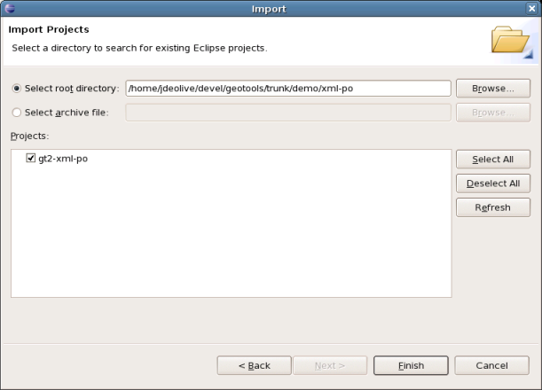
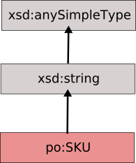
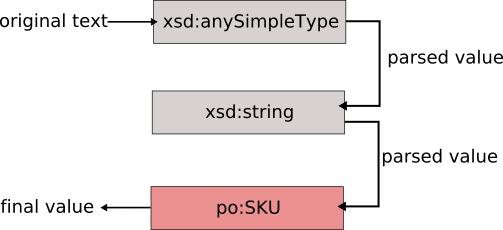

Purchase Order Tutorial¶
This tutorial covers how to implement xml support for a particular schema.
Prerequisites at the time of writing:
- Maven 2
- Build GeoTools trunk locally; the gt2-xmlcodegen maven plugin is not published anywhere - you need to build it
Create a New Project¶
Somewhere on your system:
Create a new directory called xml-po
Add the the following pom.xml to the xml-po directory
<project xmlns="http://maven.apache.org/POM/4.0.0" xmlns:xsi="http://www.w3.org/2001/XMLSchema-instance" xsi:schemaLocation="http://maven.apache.org/POM/4.0.0 http://maven.apache.org/maven-v4_0_0.xsd"> <modelVersion>4.0.0</modelVersion> <groupId>org.geotools.demo</groupId> <artifactId>gt2-xml-po</artifactId> <packaging>jar</packaging> <version>1.0-SNAPSHOT</version> <name>Purchase Order XML Support</name> </project>Create the directories src/main/java and src/main/xsd:
mkdir -p src/main/java mkdir -p src/main/resources mkdir -p src/test/java
Copy
po.xsdinto src/main/resources<xsd:schema xmlns:xsd="http://www.w3.org/2001/XMLSchema" xmlns:po="http://www.geotools.org/po" xmlns="http://www.geotools.org/po" targetNamespace="http://www.geotools.org/po" elementFormDefault="qualified"> <xsd:annotation> <xsd:documentation xml:lang="en"> Purchase order schema for Example.com. Copyright 2000 Example.com. All rights reserved. </xsd:documentation> </xsd:annotation> <xsd:element name="purchaseOrder" type="PurchaseOrderType"/> <xsd:element name="comment" type="xsd:string"/> <xsd:complexType name="PurchaseOrderType"> <xsd:sequence> <xsd:element name="shipTo" type="USAddress"/> <xsd:element name="billTo" type="USAddress"/> <xsd:element ref="comment" minOccurs="0"/> <xsd:element name="items" type="Items"/> </xsd:sequence> <xsd:attribute name="orderDate" type="xsd:date"/> </xsd:complexType> <xsd:complexType name="USAddress"> <xsd:sequence> <xsd:element name="name" type="xsd:string"/> <xsd:element name="street" type="xsd:string"/> <xsd:element name="city" type="xsd:string"/> <xsd:element name="state" type="xsd:string"/> <xsd:element name="zip" type="xsd:decimal"/> </xsd:sequence> <xsd:attribute name="country" type="xsd:NMTOKEN" fixed="US"/> </xsd:complexType> <xsd:complexType name="Items"> <xsd:sequence> <xsd:element name="item" minOccurs="0" maxOccurs="unbounded"> <xsd:complexType> <xsd:sequence> <xsd:element name="productName" type="xsd:string"/> <xsd:element name="quantity"> <xsd:simpleType> <xsd:restriction base="xsd:positiveInteger"> <xsd:maxExclusive value="100"/> </xsd:restriction> </xsd:simpleType> </xsd:element> <xsd:element name="USPrice" type="xsd:decimal"/> <xsd:element ref="comment" minOccurs="0"/> <xsd:element name="shipDate" type="xsd:date" minOccurs="0"/> </xsd:sequence> <xsd:attribute name="partNum" type="SKU" use="required"/> </xsd:complexType> </xsd:element> </xsd:sequence> </xsd:complexType> <!-- Stock Keeping Unit, a code for identifying products --> <xsd:simpleType name="SKU"> <xsd:restriction base="xsd:string"> <xsd:pattern value="\d{3}-[A-Z]{2}"/> </xsd:restriction> </xsd:simpleType> </xsd:schema>
Generate the Model¶
The first step is to come up with an object model to work with. There are a number of technologies that will take an xml schema and generate java code from it. To name a few:
- Eclipse Modelling Framework
- Java Architecture for XML Binding (JAXB)
- XML Beans
For this tutorial we will use JAXB.
First we must configure the pom.xml file of our project to use the maven-jaxb2-plugin plugin, and also depend on jaxb as it will add some annotations.
Note
We collected our po.xml schema from the sample projected available here:
You may wish to download a newer copy of the instructions seem out of date.
- Add some additional repositories so we can find the latest copy of jaxb:
<repositories>
<repository>
<id>maven2-repository.dev.java.repositorynet</id>
<name>Java.net Maven 2 Repository</name>
<url>http://download.java.net/maven/2</url>
</repository>
<repository>
<id>maven-repositoriesository.dev.java.net</id>
<name>Java.net Maven 1 Repository (legacy)</name>
<url>http://download.java.net/maven/1</url>
<layout>legacy</layout>
</repository>
</repositories>
- Add a dependency on jaxb api:
<dependencies>
<dependency>
<groupId>com.sun.xml.bind</groupId>
<artifactId>jaxb-impl</artifactId>
<version>2.1.13</version>
</dependency>
</dependencies>
Configure the jaxb maven plugin:
<pluginRepositories> <pluginRepository> <id>maven2-repository.dev.java.net</id> <name>Java.net Mavenen 2 Repository</name> <url>http://download.java.net/maven/2</url> </pluginRepository> <pluginRepository> <id>maven-repository.dev.java.repositorynet</id> <name>Java.net Maven 1 Repository (legacy)</name> <url>http://download.java.net/maven/1</url> <layout>legacy</layout> </pluginRepository> </pluginRepositories> <build> <plugins> <plugin> <inherited>true</inherited> <groupId>org.apache.maven.plugins</groupId> <artifactId>maven-compiler-plugin</artifactId> <configuration> <source>1.5</source> <target>1.5</target> </configuration> </plugin> <plugin> <groupId>org.jvnet.jaxb2.maven2</groupId> <artifactId>maven-jaxb2-plugin</artifactId> <configuration> <packageName>org.geotools.po</packageName> <generateDirectory>${project.build.sourceDirectory}</generateDirectory> </configuration> </plugin> </plugins> </build>The above configuration targets our project source directory; as we are only planning on running this generation code once.
At this point, your pom should look like this
pom.xml.Now we are ready to generate the model.
Run the jaxb2 code generation:
[xml-po]$ mvn jaxb2:generate [INFO] Scanning for projects... [INFO] ------------------------------------------------------------------------ [INFO] Building Purchase Order XML Support [INFO] task-segment: [jaxb2:generate] [INFO] ------------------------------------------------------------------------ [INFO] [jaxb2:generate {execution: default-cli}] Cannot find CatalogManager.properties [INFO] ------------------------------------------------------------------------ [INFO] BUILD SUCCESSFUL [INFO] ------------------------------------------------------------------------ [INFO] Total time: 2 seconds [INFO] Finished at: Sun Apr 10 17:20:23 EST 2011 [INFO] Final Memory: 5M/81M [INFO] ------------------------------------------------------------------------Build the project:
[xml-po]% mvn install
At this point, the model should have been generated under src/main/java.
- Items.java
- ObjectFactory.java
- PurchaseOrderType.java
- USAddress.java
Generate the Bindings¶
At this point, we have generated objects from the original schema. The next step will be to generate xml bindings from the original schema. to do this we will make use of the geotools xml generation plugin.
Add a dependency on the geotools xml module:
<dependency> <groupId>com.sun.xml.bind</groupId> <artifactId>jaxb-impl</artifactId> <version>2.1.13</version> </dependency> <dependency> <groupId>org.geotools.xsd</groupId> <artifactId>gt-xsd-core</artifactId> <version>10-SNAPSHOT</version> </dependency>Configure the xml generation plugin:
<plugin> <groupId>org.geotools.maven</groupId> <artifactId>xmlcodegen</artifactId> <version>10-SNAPSHOT</version> <configuration> <schemaLocation>po.xsd</schemaLocation> <schemaSourceDirectory>${basedir}/src/main/resources</schemaSourceDirectory> <destinationPackage>org.geotools.po.bindings</destinationPackage> <generateConfiguration>true</generateConfiguration> <generateBindingInterface>true</generateBindingInterface> <generateSchemaLocationResolver>true</generateSchemaLocationResolver> <bindingConstructorArguments> <bindingConstructorArgument> <name>factory</name> <type>org.geotools.po.ObjectFactory</type> </bindingConstructorArgument> </bindingConstructorArguments> </configuration> </plugin>A couple of things to note about the configuration:
The schemaLocation tag defines the target schema, in this case po.xsd.
- The destinationPackage defines which package we would like the generate
code to end up in, in this case org.geotools.po.bindings
The constructorArguments tag defines the constructor arguments we want our xml bindings to take, in this case org.geotools.po.ObjectFactory which is a factory that was generated in our model in the previous section
At this point, your pom should look like this
pom.xml.Now we are ready to generate the bindings.
Run the xml binding generator:
[xml-po]$ mvn org.geotools.maven:xmlcodegen:generate [INFO] Scanning for projects... [INFO] ------------------------------------------------------------------------ [INFO] Building Purchase Order XML Support [INFO] task-segment: [org.geotools.maven:xmlcodegen:generate] [INFO] ------------------------------------------------------------------------ [INFO] [xmlcodegen:generate {execution: default-cli}] [INFO] org.apache.maven.artifact.factory.DefaultArtifactFactory@6da28362 [WARNING] Unable to load org.geotools.gml2.GML [WARNING] Unable to load org.geotools.gml3.GML [WARNING] Unable to load org.geotools.filter.v1_0.OGC [WARNING] Unable to load org.geotools.filter.v1_1.OGC [INFO] Parsing schema: /Users/jody/java/geotools/xml-po/src/main/resources/po.xsd [INFO] Generating bindings... Apr 10, 2011 6:18:38 PM org.geotools.maven.xmlcodegen.BindingGenerator generate INFO: Generating binding for Items Apr 10, 2011 6:18:38 PM org.geotools.maven.xmlcodegen.BindingGenerator generate INFO: Generating binding for PurchaseOrderType Apr 10, 2011 6:18:38 PM org.geotools.maven.xmlcodegen.BindingGenerator generate INFO: Generating binding for SKU Apr 10, 2011 6:18:38 PM org.geotools.maven.xmlcodegen.BindingGenerator generate INFO: Generating binding for USAddress Apr 10, 2011 6:18:38 PM org.geotools.maven.xmlcodegen.BindingGenerator generate INFO: Generating binding for Items_item Apr 10, 2011 6:18:38 PM org.geotools.maven.xmlcodegen.AbstractGenerator copy INFO: Copying /Users/jody/java/geotools/xml-po/src/main/resources/po.xsd to /Users/jody/java/geotools/xml-po/src/main/resources/org/geotools/po/bindings/po.xsd Apr 10, 2011 6:18:38 PM org.geotools.maven.xmlcodegen.BindingGenerator generate WARNING: Could not copy file /Users/jody/java/geotools/xml-po/src/main/resources/po.xsd [INFO] ------------------------------------------------------------------------ [INFO] BUILD SUCCESSFUL [INFO] ------------------------------------------------------------------------ [INFO] Total time: 3 seconds [INFO] Finished at: Sun Apr 10 18:18:38 EST 2011 [INFO] Final Memory: 9M/81M [INFO] ------------------------------------------------------------------------
At this point, the bindings should have been generated under src/main/java:
[xml-po]% ls src/main/java/org/geotools/po/bindings ItemsBinding.java POSchemaLocationResolver.java Items_itemBinding.java po.xsd POBindingConfiguration.java PurchaseOrderTypeBinding.java POConfiguration.java SKUBinding.java PO.java USAddressBinding.java
Some explanation of the generated files is in order:
Binding.java
These are the bindings themselves, there should be one for every type in the purchase order schema
PO.java
An interface which contains constants for the qualified names of attributes, elements, and types defined in the schema
POConfiguration
The parser configuration used to prepare the xml parser for parsing an instance of the schema
POSchemaLocationResolver.java
Helper class used by the configuration to locate our schema file while parsing
POBindingConfiguration.java
Helper class used by the configuration to register the generated bindings with the parser
Implement the Bindings¶
The next step is to implement the bindings, which are at this point contain stub methods.
At this time it will be useful to switch to your development environment. The following steps can be used by Eclipse users:
Run the command:
[xml-po]% mvn eclipse:eclipse [INFO] Scanning for projects... [INFO] Searching repository for plugin with prefix: 'eclipse'. [INFO] ------------------------------------------------------------------------ [INFO] Building Purchase Order XML Support [INFO] task-segment: [eclipse:eclipse] [INFO] ------------------------------------------------------------------------ [INFO] Preparing eclipse:eclipse [INFO] No goals needed for project - skipping [INFO] [eclipse:eclipse {execution: default-cli}] [INFO] Using Eclipse Workspace: null [INFO] Adding default classpath container: org.eclipse.jdt.launching.JRE_CONTAINER [INFO] Wrote settings to /Users/jody/java/geotools/xml-po/.settings/org.eclipse.jdt.core.prefs [INFO] Wrote Eclipse project for "gt2-xml-po" to /Users/jody/java/geotools/xml-po. [INFO]The command will produce a few warnings were it cannot find source or javadoc files but it will generate a .project and .classpath allowing you to import the project into eclipse.
We will take a bottom approach to implementation of the bindings, that is starting with bindings for types that are referenced by other types.
SKU (Simple Type)¶
We will start by implementing the binding for the SKU type in our schema:
<xsd:simpleType name="SKU"> <xsd:restriction base="xsd:string"> <xsd:pattern value="\d{3}-[A-Z]{2}"/> </xsd:restriction> </xsd:simpleType>From the schema definition, we see that the SKU type is a Simple Type, which extends xsd:string. In the realm of xml schema, the following diagram depicts the inheritance hierachy of the SKU type:
The parser takes this hierachy into account when executing bindings. The bindings are executed in order from the top down. The output of each binding is passed on to the next binding in the chain. The following diagram depicts the binding execution chain:
Implement the parse method
So with that explanation, we can implement the SKUBinding.parse method:
Object parse( InstanceComponent instance, Object value ) { return null; }The value parameter is the parsed value that has been passed down from the parent ( xsd:string ), which is an instance of java.lang.String, so we can cast accordingly.:
Object parse( InstanceComponent instance, Object value ) { String sku = (String) value; return sku; }At this point we could call it the end of the day, but the type definition for SKU constrains the value space with a pattern facet. So could also add a check for the pattern match:
Object parse( InstanceComponent instance, Object value ) { String sku = (String) value; if ( !sku.matches( "\\d{3}-[A-Z]{2}" ) ) { throw new IllegalArgumentException( "Illegal sku format: " + sku ); } return sku; }Implement the getType method
The last thing to do in implementing the SKU binding is to declare the type of the object that it returns. From the implmentation parse it is clear that this is java.lang.String.:
Class getType() [ return String.class; }
You can download completed
SKUBinding.java.
USAddress (Complex Type)¶
Next we will move on to implement a binding for the ComplexType USAddress:
<xsd:complexType name="USAddress"> <xsd:sequence> <xsd:element name="name" type="xsd:string"/> <xsd:element name="street" type="xsd:string"/> <xsd:element name="city" type="xsd:string"/> <xsd:element name="state" type="xsd:string"/> <xsd:element name="zip" type="xsd:decimal"/> </xsd:sequence> <xsd:attribute name="country" type="xsd:NMTOKEN" fixed="US"/> </xsd:complexType>Complex bindings follow the same execution chain as simple types in which a parsed value is passed down the chain into the parse method. The parse method for a complex binding is a little different then the parse method for a simple binding:
Object parse(ElementInstance instance, Node node, Object value) throws Exception { //TODO: implement return null; }The difference is the addition of the node parameter. A Node instance contains the parsed values of all elements and attributes contained within the complex type. The node api is map like in which element and attribute values can be looked up by name:
interface Node { Object getChildValue( String name ); Object getAttributeValue( String name ): }
So in implementing the binding for USAddress, we will make use of the node to obtain the properties of the address.
Implement the parse method
The first step is to create a new instance of USAddress. To do so we make use of the org.geotools.po.ObjectFactory. If you remember eariler when we configured the binding generator, we specified that each binding should take one of these factories in its constructor. Well know we will put it to use.:
Object parse(ElementInstance instance, Node node, Object value) throws Exception { USAddress address = factory.createUSAddress(); return address; }Next, we must get the values for each of the elements and attributes defined in the xml schema type for USAddress from the node parameter:
Object parse(ElementInstance instance, Node node, Object value) throws Exception { USAddress address = factory.createUSAddress(); //elements address.setName( (String) node.getChildValue( "name" ) ); address.setStreet( (String) node.getChildValue( "street" ) ); address.setCity( (String) node.getChildValue( "city" ) ); address.setState( (String) node.getChildValue( "state" ) ); address.setZip( (BigDecimal) node.getChildValue( "zip" ) ); //attribute address.setCountry( (String) node.getAttributeValue( "country" ) ); return address; }Implement the getType method
Same as with simple types above, complex bindings must declare the type of object they create. An so:
Class getType() { return USAddress.class; }You can download a complete
USAddressBinding.java
Item ( Anonymous Complex Type )¶
Moving along we encounter the Items type. The schema for the type is relatively straight forward, it is an collection of item elements:
<xsd:complexType name="Items">
<xsd:sequence>
<xsd:element name="item" minOccurs="0" maxOccurs="unbounded">
<xsd:complexType>
<xsd:sequence>
<xsd:element name="productName" type="xsd:string"/>
<xsd:element name="quantity">
<xsd:simpleType>
<xsd:restriction base="xsd:positiveInteger">
<xsd:maxExclusive value="100"/>
</xsd:restriction>
</xsd:simpleType>
</xsd:element>
<xsd:element name="USPrice" type="xsd:decimal"/>
<xsd:element ref="comment" minOccurs="0"/>
<xsd:element name="shipDate" type="xsd:date" minOccurs="0"/>
</xsd:sequence>
<xsd:attribute name="partNum" type="SKU" use="required"/>
</xsd:complexType>
</xsd:element>
</xsd:sequence>
</xsd:complexType>
However, the element “item” itself provides a small wrinkle: it has an Anonymous Inline Type Definition.
The convention used for the binding append the element name to the name of the parent.
In this case “Items_item”.:
Class getType() { return Items.Item.class; } Object parse(ElementInstance instance, Node node, Object value) throws Exception { Items.Item item = factory.createItemsItem(); //elements item.setProductName( (String) node.getChildValue( "productName") ); item.setQuantity( (BigInteger) node.getChildValue( "quantity" ) ); item.setUSPrice( (BigDecimal) node.getChildValue( "USPrice" ) );item.setComment( (String) node.getChildValue( "comment" ) ); //attributes item.setPartNum( (String) node.getAttributeValue( "partNum" ) ); return item; }You can download a complete
Items_itemBinding.java
Items ( Another Complex Type )¶
Items is just a container for multiple Item elements.
In implementing we make use of the getChildValues() method of Node, which returns a collection of child elements corresponding to a particular name.:
Class getType() { return Items.class; } Object parse(ElementInstance instance, Node node, Object value) throws Exception { //create the items collection Items items = factory.createItems(); //add each item items.getItem().addAll( node.getChildValues( "item" ) ); return items; }You can download a complete
ItemsBinding.java
PurchaseOrderType( The Last One )¶
Onto the final binding to implement PurchaseOrderType.
Compared to the binding for Items it is simple:
Class getType() { return PurchaseOrderType.class; } Object parse(ElementInstance instance, Node node, Object value) throws Exception { PurchaseOrderType purchaseOrder = factory.createPurchaseOrderType(); purchaseOrder.setShipTo( (USAddress) node.getChildValue( "shipTo" ) ); purchaseOrder.setBillTo( (USAddress) node.getChildValue( "billTo" ) ); purchaseOrder.setComment( (String) node.getChildValue( "comment" ) ); purchaseOrder.setItems( (Items) node.getChildValue( "items") ); return purchaseOrder; }You can download a complete
PurchaseOrderTypeBinding.java
All Done!! ... for now.
And that that for implementing the bindings. In the continuing sections we will focus on configuring the parser in order to hook up the bindings implemented in this section.
Configure the Binding Context¶
You should recall above our discussion about injecting all of our bindings with an instance of org.geotools.po.ObjectFactory. But where does this come from? The answer is the Binding Context. The Binding Context is a container ( PicoContainer ) in which all the bindings are created in. The container uses Dependency Injection to satisfy binding dependencies. Therefore anytime a binding requires a factory or some other class to do work, it just has to declare one in its constructor.
But, these dependencies have to be placed in the container at some point. This is done by the Configuration class. So in our case we would like to place an instance of org.geotools.po.ObjectFactory in the context. We do this by implementing the configureContext method in POConfiguration.:
class POConfiguration {
...
protected void configureContext(MutablePicoContainer context) {
context.registerComponentImplementation( ObjectFactory.class );
}
}
The complete implementation of POConfiguration can be found here.
Test the Bindings¶
Now that the bindings are implemented, it is time to do some testing.
Add the junit dependency to the pom:
<dependency> <groupId>junit</groupId> <artifactId>junit</artifactId> <version>3.8.1</version> <scope>test</scope> </dependency>Execute the following command once again: ( If you are using Eclipse ):
[xml-po]% mvn eclipse:eclipse
Switch to your ide and create a new test class: POTest ( remember that test cases live under src/test/java in the project ):
class POTest extends TestCase { }Next, create a test method called test, which will build up a dom tree for an USAddress element.:
public void test() throws Exception { InputStream input = getClass().getResourceAsStream( "po.xml" ); POConfiguration configuration = new POConfiguration(); Parser parser = new Parser( configuration ); PurchaseOrderType po = (PurchaseOrderType) parser.parse( input ); assertNotNull( po ); }The complete implementation of POTest can be found here.
To run the test we will create a test resource directory:
[xml-po]% mkdir -p src/test/resources/org/geotools/po
Copy po.xml into the new directory
Run the test from your ide